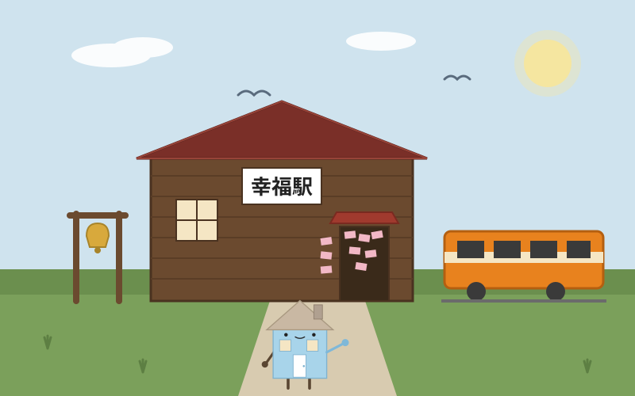
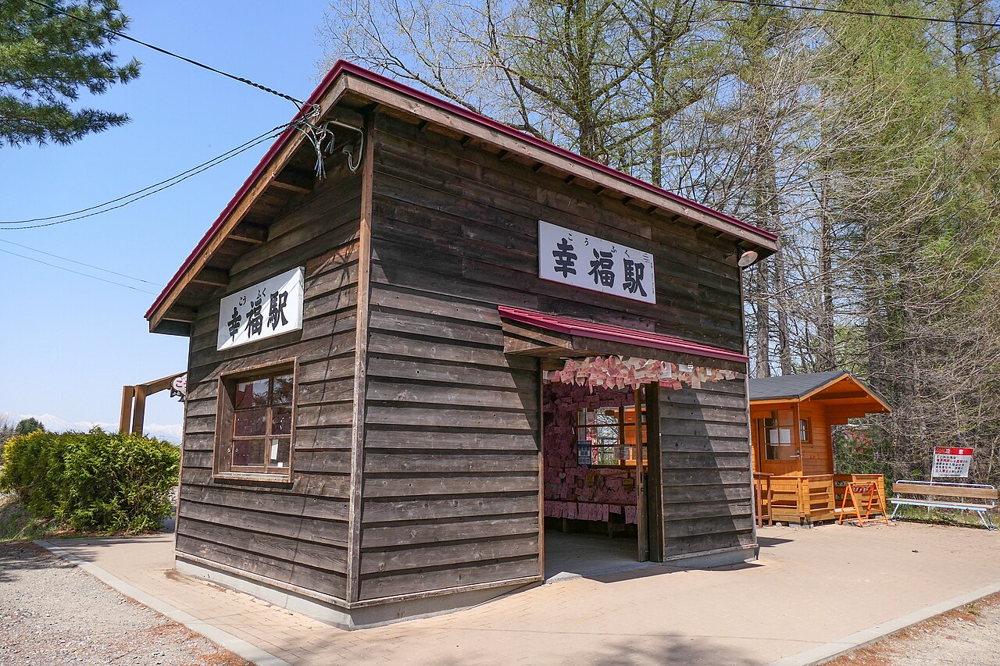
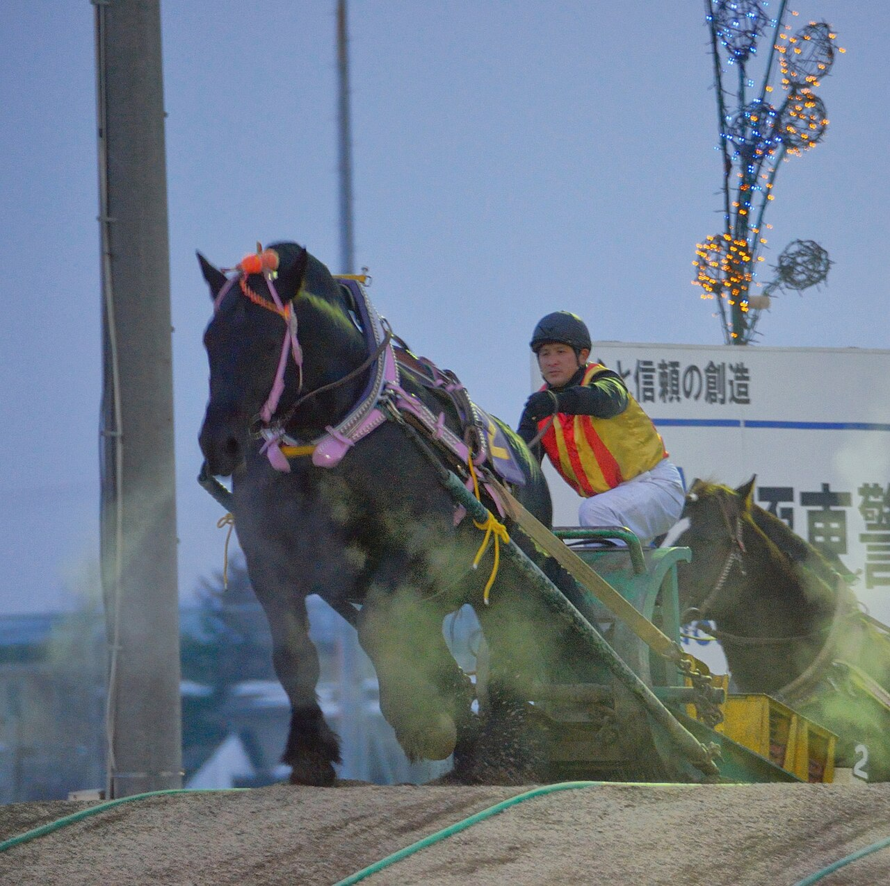

Day 20：帯広市

木の駅舎の前に立つと、まず匂いがした。古い木の匂いと、紙の匂いだ。壁も天井も、ピンク色の小さな切符で埋め尽くされている。ここは幸福駅。列車はもう来ない。1987年に広尾線とともに廃止された駅だ。それでも駅舎の中は、人の願いだらけだった。壁に貼られた何千枚もの切符には、みんな「幸福ゆき」と書いてある。駅名標のそばで、幸福の鐘が鳴る音がしたような気がした。
大樹本町8時47分発の十勝バス広尾線は、忠類でトイレ休憩をして、更別、中札内を通り、9時41分に「幸福」に着いた。車窓には畑と牧草地が広がり、十勝平野の空が大きい。駅で1時間ほど過ごしてから、11時25分発のバスに乗り直し、帯広駅バスターミナルに13時20分に着いた。乗り直したバスは、幸福を出てから愛国へ向かった。切符の方向は「愛国から幸福へ」なのに、私は幸福から愛国へ行く客だった。
幸福駅は1956年に開業した。1981年の1日の乗降客は13人。1987年の広尾線廃止とともに、姿を消すはずの駅だった。ところが1973年3月、NHKの『新日本紀行』が「幸福への旅〜帯広〜」として紹介すると、1972年に7枚しか売れなかった愛国—幸福間の切符が、1973年には300万枚、4年間で1,000万枚を超えて売れた。駅舎は2013年に建て替えられたが、外壁の半分は旧駅舎のものを使い直したという。レールの上にはオレンジ色のキハ22形が2両、今も止まったままだ。十勝バスは今も「愛国から幸福ゆき」の硬券切符を売っている。

私は家だ。たねを毎朝見送るのが仕事で、家は動かない。だから最初、廃駅に親しみを覚えた。役目を終えた建物が、ただ残されているのだと思った。けれど幸福駅は、残されているだけではなかった。列車を迎える役目は終えたのに、人の願いを集める場所として生き続けている。壁の切符は、誰かがここへ来て幸福を願った証だ。家も同じかもしれない。住む人がいなくなっても、壁に残るものが人を呼ぶ。私の水色の壁にも、いつか願いが貼られる日が来るのだろうか。
帯広駅に着くと、街は十勝平野の中心らしい広がりだった。帯広といえば豚丼。開拓時代のスタミナ源として生まれた炭火焼きの豚肉の丼だ。もう一つ、世界でここだけのばんえい競馬。体重1トン近いばん馬が鉄のソリを曳き、200メートルの直線コースにある高さ1メートルと1.6メートルの二つの障害を越える。今日は金曜日で、開催日の土・日・月には当たらない。けれど、開拓の馬が競走馬として今も走っている街だと思うと、どこかで馬の匂いがするような気がした。

幸福駅の切符は「愛国から幸福へ」と向かうのに、私のバスは幸福から愛国へ向かった。幸福は、着く場所ではなく、出発する場所でもあるのかもしれない。そう思うと、帯広の空が少しだけ広く見えた。
出典：Wikipedia「幸福駅」「ばんえい競走」、帯広市「幸福駅・愛国駅｜愛の国から幸福へ」、十勝バス「広尾線（平日ダイヤ）」（2026-11-20）。
💬 コメント